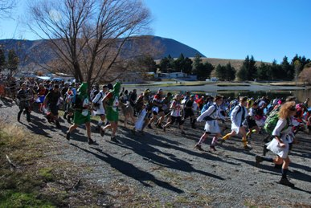

Dear Rogainer,
Welcome to the NZRA newsletter for June.
The next major event is the annual “Heights of Winter” in Canterbury in
less than two weeks, followed by the “Golden Road” in Otago four weeks
later. We also list 3hr and 6hr events near the end of June in
Whakatane and Otago. And don’t overlook the various shorter Rogaines
with some these being mid-week, after work.
While the NZ Secondary School Champs is not until August it would make
sense for schools to have a practice run in either the Navquest or the
Canterbury SS champs.
Two of the more unusual events in the Rogaine calendar, T’Walk and City
Safari, were successfully run in May. Take a look at the brief reports
and the links below.
Upcoming Events
Heights of Winter – “Blythe
Downs and Ups”
Blythe Valley, North Canterbury, Saturday 14th June
Course planning for the annual ‘HOW’ is complete and most check point
flags were placed this Queens Birthday weekend. Take a look at the List
of Entrants.
Entries have reached the limit of 220 in the 6hr event and are getting
close in the 12hr. Once the limit is reached a few further entries will
be waitlisted before entries are cutoff – but, of course, we cannot
promise that any team on the waitlist will gain entry.
“Summer's on its Way”, Whakatane, Sunday 22nd June
Urban and
a little bit rural with 6 and 3 hour options. The
start/finish is at Trident High School, Whakatane. This event is a
fundraiser for a Year 10 class heading to OPC Great Barrier. There will
be some very nice scenery.... an active volcano, dormant
volcanoes,
expansive sandy beaches, an historic pa, several cafes and footpaths.
Entry fee is $15. Contact is Alister
Coulter.
Hamels Haunts V, Dunedin, Sunday 29th June
Matt Bixley is
providing his Hamel Haunts rogaine again this
year. This is an entry-level three hour event designed to be training
for Spring Challenge and other longer navigation events. Registration
from midday. Start at 1pm. Cost $10. Map - brand new, hand-made. Food -
sausage, bread and drink. Contact is Matt Bixley, matt.bixley@agresearch.co.nz
or 021 046 9255. Consult https://www.facebook.com/events/719855094744304/
for up-to-date information.
The Golden Road Rogaine, Eastern Otago, Saturday 12th July
There will
be a 13-hour “Classic”, a 6-hour “Introduction”
and a 3-hour “Family Special”. The terrain, west of Waikouaiti and a
one-hour drive from Dunedin, is relatively open farmland and tussock
with rocks and scrub, plus some forest. Details
are available on the NZRA website. Entries open 12th June.
Why is there a 13hr
option in the Golden Road? – nothing to do
with the number 13 and bad luck but because it is a reincarnation of
the “Bakers Dozen” which was last run in 2006. General Enquiries:
Bob
Cunninghame, signalhill@xtra.co.nz,
ph. (03) 473 8330.
In August
we have the
• Great Forest Rogaine, Rotorua
• NZ Secondary School Championships, Rotorua (see
below) and
• 28th Winter Classic, Wellington
to look forward to. Consult the NZRA
calendar for further information on these.
Various series of short Rogaines
Welly Afterwork Rogaine Series, 15th Apr to 11th Nov
Monthly 3hr
afterwork events in the Wellington region, except
for June and July. For more information see the Welly Rogaine website.
Auckland Rogaine Series, final event 8th June
The final 90min Sunday
event, organised by the North West
Orienteering Club, is scheduled for the 8th June. For more information
see the event website.
Nelson Winter Rogaine Series, 4th June to 25th June
This series of four mid-week
events in Nelson starts this week.
For more information see the OrienteeringNZ
calendar.
Secondary School Rogaining
NZ Secondary School Rogaine Championships, Saturday 9th August
The
inaugural NZ Secondary School Rogaine Championships,
officially sanctioned by the NZ Secondary School Sports Council and by
Orienteering NZ, will be hosted by Orienteering Bay of Plenty (OBoP) in
conjunction with the Great Forest Rogaine. There will be Senior 4 hour
and Junior 3 hour events in Mixed, Male and Female categories. Full
details and the entry form are now available at http://www.orienteering.org.nz/nzss-rogaine-champs/.
If you know of a school wishing to partake the person to contact is
Suzanne Scott at suebrook08@gmail.com
or phone 021 233 9078.
School events leading up to the NZ Secondary School Championships
If you are looking to
prepare a school team for the New
Zealand Championships there are school rogaines scheduled in Rotorua
(run last weekend), Taupo, Wellington, Auckland, and Christchurch:
Navquest Series, 25th May to 22nd June - Rotorua, Taupo,
Wellington and Auckland
Just
over 40 keen adventurers took part in the first
NavQuest event of the year on May 25th in Rotorua. For the final scores
see the OPC facebook, https://www.facebook.com/opcnz.
The second Navquest event is near Taupo on 8th June followed by
Wellington (15th June) and Auckland (22nd June). These 3hr rogaines are
aimed at secondary school students, their families and teachers but
anybody is welcome to join in. Go to http://www.opc.org.nz/navquest/
for more information and to register a team online. The NavQuest is a
partnership between the Sir Edmund Hillary Outdoor Pursuits Centre and
orienteering clubs in Rotorua, Taupo, Wellington and Auckland.
Canterbury Secondary Schools Rogaine, Christchurch Port Hills,
Sunday 6th July
The Peninsula
and Plains Orienteers is organising a
Canterbury Secondary School Rogaine on Sunday 6th July based at
Victoria Park. Planner is Tim Farrant. There will be a three and four
hour options following the same format as the NZ Secondary Schools
Rogaine in Rotorua on 9th August. The event will be open to anyone, and
be a fund raiser to assist the top senior and junior teams to attend
the National championships. Contact is Martin Etherington, martin@etherington.co.nz
or ph. 027 433 1388
Championships coming up
They haven’t changed since the last newsletter but here they are again.
12th World Rogaining Championships
Black Hills, South Dakota, 16th-17th August 2014
To date 32 Kiwis have registered their interest. If you
are wondering what is in store look at the article by Bud Laird on Rogaining
in S. Dakota. The event website and blog is at http://peakassurance.net/. See
the list
of entrants.
Australasian Championships (Goldfields Bonanza)
Victoria, weekend 11th-12th October 2014
Set in an
old goldfields area in the Castlemaine region, the
terrain is a complex and challenging mixture of spurs and gullies handy
to Melbourne. There will be a 6hr event as well as the championship
24hr. Details at http://vra.rogaine.asn.au/arc14/.
New Zealand Championships 2014
Otago, weekend 6th-7th December
The 2014 New
Zealand Champs will be based in the lower Nevis
Valley with its unique landscapes and historic remnants of the gold
mining era. This interesting valley is quite remote but is readily
accessible in summer; Google “Nevis Valley” for a glimpse of what the
area offers. Chief organisers are the experienced Highland Events team
of Ed Stevens and Terry Davis who are well known for their twice yearly
Wanaka Rogaines. Look out for more information on the NZRA website soon.
Event Calendars
For details of future rogaines keep your eye on:
1. the NZRA website event calendar at http://www.rogaine.org.nz/ and
2. the Maptalk website http://www.maptalk.co.nz/events/default.cfm?t=Rogaine
which is in transition to the new OrienteeringNZ
calendar so keep your eye on both for now.
Events just past
The weekend 17th – 18th May featured two out-of-the-ordinary but very
popular events in T’Walk and the Metlink City Safari. T’Walk, the 24hr
walk organised by the Canterbury University Tramping Club, attracted
308 participants in 57 teams while the Safari saw nearly 550
participants using public transport, supplemented by a bit of foot
work, navigating their way around the suburbs of Wellington for 3 or 6
hrs.
T'Walk 2014, Canterbury, weekend 17th -18th May
Six busloads of excited T’Walkers descended on the
Ashburton Gorge for the 48th edition of T’Walk organised by the
Canterbury University Tramping Club (CUTC). And what a great event it 
was with
plenty of nourishing hash-house food and, for those whose legs were not
up to the full 24hrs, a huge woolshed to crash in.
Organiser Sharon Hornblow reports:
“The 48th T'Walk was moonlit and, according to most competitors,
marvellous and full of just the right combination of matagouri and bog.
The only "complaint" this year was that it all went a little too
quickly for the Rubber Ducky Hunters - winners who collected all 72
checkpoints with over an hour to spare. We're not sure when this sort
of thing last occurred, but the route-setters were just glad to know
that all the controls were in place where they were left 2 weeks
previously.
The compulsory first leg took teams from the start line at Lake Camp
across the very scrubby northern flank of Mt Harper, around Lake Emma,
and to the woolshed at Hakatere. Hash-house cooks were rushed off their
feet as most teams cleared the 15km in less than 4 hours, with record
volumes of pumpkin soup being required for the 308 entrants in 57 teams
this year. Subsequent legs took advantage of the heights and gnarly
ridges of the Barrosa and Mt. Possession high-country stations, and the
midnight disorientation caused by rolling glacial moraines south of the
Te Araroa trail. A very clear weekend provided brilliant views across
the lumpy flats from Mt Taylor to Mt D'Archiac and we were gifted with
a bit of a NW in the wee hours to warm things up a bit and clear the
fog for maximum moonlit navigation.
Overall things went very smoothly for this biggest annual CUTC event,
facing record numbers yet again. However, things couldn't have gone
nearly so well if it weren't for the deep generosity of the Mt
Possession Station landowners. They not only tolerated, but welcomed
the invasion, and didn't mind us blowing the fuse to the electric
fences with all our 6am lasagne efforts.
This year was notably different to most in the past decade, with
checkpoints being generally "flawless, but not too easy" and most
competitors found that if you're "in the right area, you could
generally find them without too much difficulty or randomness"...
great compliments for an event sometimes renowned for frustrating the
hell out of everyone sometimes for no reward. As far as I know, most
new to rogaining loved it, so expect plenty of new faces at future
events this year!
Thanks to all for another great T'Walk”
Sharon
See the T'Walk website
for the results and maybe some pictures. Next year’s T’Walk is likely
to be the weekend 10th/11th May. And the following one will be the
Golden Jubilee.
Metlink City Safari, Wellington, Sunday 18th May
The City Safari in which teams race by foot, train, bus,
cable car or ferry to find checkpoints spread at unique and interesting
spots throughout the Wellington region attracted nearly 550
participants and was featured on the front
page of the Dominion Post. Check out the results and routes taken on
the event website.
Welly Afterwork Series, Wellington
The Welly
Afterwork Series continued with the second event in
Wilton, practically in Wellington city, on 8th May. There was a
pleasing turnout of 63 people. A report by planners Rachel and Liam
Drew, and the results, are available at http://www.mapsport.co.nz/wellyrog/awrog14res.html.
See the calendar at http://www.maptalk.co.nz/events/default.cfm?t=Rogaine
or the OrienteeringNZ
calendar for the dates of future rogaines in the Welly series.
Auckland Rogaine Series
Results and pictures from
the first three events, organised by
the North West Orienteering Club, may be viewed on the series website. About 300
people individually and in teams took part in the 90min rogaine in the
Woodhill forest on 25th May. The final event for 2014 is next Sunday
8th June.
That is it for now. Happy Rogaining,
Regards,
NZRA (http://www.rogaine.org.nz/)